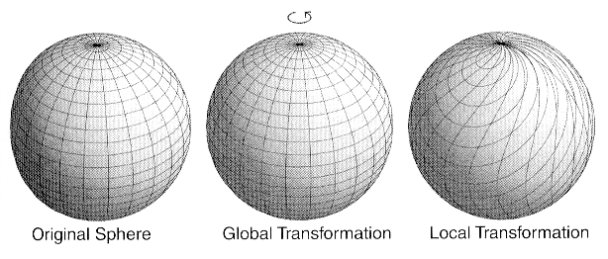
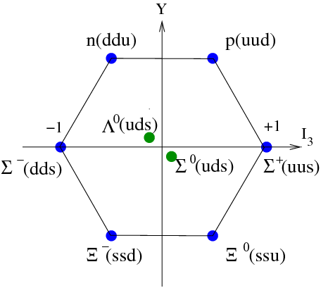

What is a Symmetry in Physics?
We begin the discussion of symmetry in familiar territory, namely that of the equilateral triangle. If we rotate the equilateral triangle about its centre by 120° in any direction it looks exactly the same. In other words, there is no way of telling the difference between the triangle before a 120° rotation and after a 120° rotation. We could therefore say that the equilateral triangle possesses a discrete rotational symmetry. To see this in action, try out the animation below which rotates the triangle clockwise by 120° when the button is clicked. If the coloured circles were absent, there would be no way of telling that the rotation has happened.
In the context of physics, a symmetry means that there is an element of freedom given to the physicist when considering a system. For example, if we ignore the rest of the universe and just consider the Earth orbiting the Sun, then it doesn't change anything if we rotate the system. In this sense, the Earth-Sun system possesses a continuous rotational symmetry.

The previous two examples describe global symmetries. These are symmetries which require the same transformation to be made at all points. However, there is another type of symmetry, known as a local symmetry, which requires a different transformation at different points in space-time. In order to see the difference between a global and a local transformation, see figure 2 below, in which the effect of a global and a local rotation are compared. This is a more abstract concept, however is of great utility, as will be explained in due course.
Now that we have seen what we mean by symmetry in physics, we can move on to why it might be useful.
Why is Symmetry Useful?
There are two main reasons why physicists are so fond of symmetry. The first involves the use of Noether's theorem, named after the famous mathematician Emmy Noether, pictured above. Loosely, this states that wherever there is a symmetry, there is a corresponding conserved quantity, that is a quantity whose value is constant over time[1]. In the previous example of the Earth-Sun system, rotational symmetry implies the conservation of angular momentum.
The other main utility of a symmetry is that it can often be described through the use of a mathematical construct called a group. For example, the group representing all rotations in 3-D space is known as the SO(3) group[2]. Therefore, if a system possesses complete rotational symmetry in 3-D, it is said to possess an SO(3) symmetry. Thanks to the extensive efforts of mathematicians, the properties of these groups are well understood and these can be exploited to make further physical predictions.
To see how this might work, we can look at how symmetry applies to the strong nuclear force. In this case, there is a symmetry between the proton and neutron, in the sense that they are (approximately) indistinguishable in their interactions with the strong force. Mathematically this is described by an SU(2) symmetry and from this, we can use group theory to predict the existence of many more sets of particles, each with similar properties. Furthermore, group theory even tells us that these particles appear in sets of certain sizes and these sets are known as multiplets. In the case of SU(2), these sizes are given by (2j + 1), with j an integer or half integer[3].
If we take this symmetry further and incorporate the quark model, then we can say that the strong interaction is approximately the same for all three quarks and hence there is a global SU(3) flavour symmetry[4]. In this case, the multiplets take on a more complicated structure. One of these multiplets is the baryon octet and is shown in the figure below. The position of the particle in this plot is due to the value of particular quantum numbers assigned to it. The importance here is the grouping of the particles into well-defined multiplets, with the structure dependent on the symmetry group involved.
This may seem like a highly presumptious way of working, but these multiplets of particles have indeed been observed in nature, a testament to the power of the link between mathematics and physics.
The above properties apply to both global and local symmetries, however if there exists a local symmetry we can gain even more insight. More precisely, when mathematically asserting a local symmetry for a system, we require the introduction of a field. This field appears in order to maintain the form of the equations under the local transformation and has to have very particular properties in order to successfully do this. These properties then tell us how this field behaves in the presence of matter and allows us to make predictions which can be experimentally verified. A theory of this form possesses a property called gauge invariance in order to ensure the preservation of the relevant equations under the local transformation and is therefore known as a gauge theory. Furthermore, when quantum mechanics is applied to a theory of this form, the fields are quantised and interactions are represented by the exchange of the gauge boson of that field type.
The fundamental theories underpinning elementary particle physics are theories of this form and are detailed further in the current theories section.